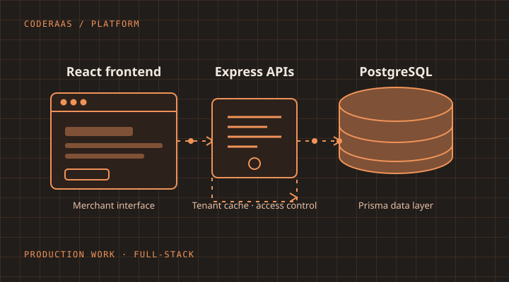
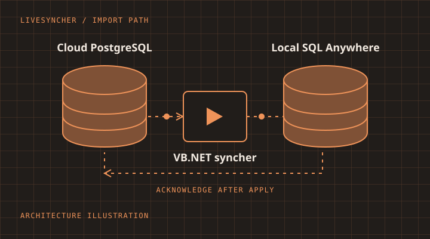
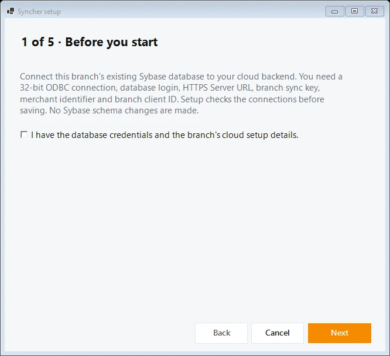

01Receive
The Windows app receives a cloud change over a server-sent event stream and records it in the local staging queue.
Full-stack developer intern
Modernizing a legacy point-of-sale platform
I built and maintained React and Express features for a web platform that modernized a legacy VB6 point-of-sale system. My work covered frontend performance, API caching, Prisma queries, and production access control. I also worked on LiveSyncher, the Windows app that keeps cloud and local data in sync.
Maintained UI features, split vendor chunks, and lazy-loaded routes. The sidebar and header share a cached master-menu response.
Cached GET responses by tenant and session, invalidated affected entries after writes, and added caching for the report tree.
Optimized Prisma queries and indexed merchant and user scope lookups for branch and concept permissions. Addressed production access-control issues.

One Windows subsystem inside the Coderaas platform. It keeps cloud and local records in sync.

Sample event 1042 is waiting to be sent.
The Windows app receives a cloud change over a server-sent event stream and records it in the local staging queue.
The client maps the incoming change to the legacy schema and executes the local write.
After a successful local apply, the client acknowledges the event. Failed acknowledgments can be retried.
